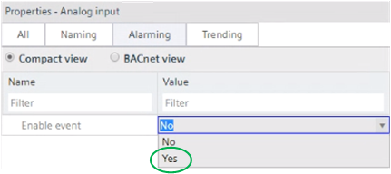
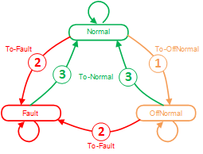
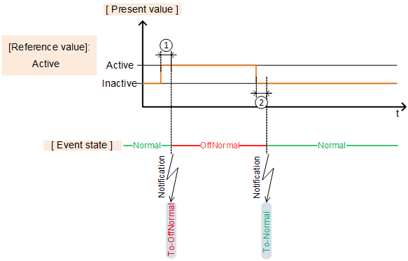
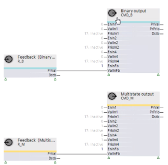

令人震惊
警报是必须向建筑物操作员报告以便操作员做出反应的事件。警报监控工厂。
警报监控（触发、报告、确认）根据固有警报原理运行，并按照 BACnet 标准实施。
内部报警意味着报警监控（OFFNORMAL 和 FAULT 报警）发生在报警生成对象本身（报警源）内。
对象的报警状态机和报警响应参数包含在 BACnet 对象的扩展中（固有报警的扩展）。该扩展是在工程期间通过以下设置添加的：
- 'Enable event' with setting 'Yes'

该设置启用扩展，并且设置所需的 BACnet 属性显示在 ABT 站点和编程编辑器中。
某些参数还可以在启用的固有报警扩展上在线编辑（例如模拟输入的“上限”和“下限”）。
报警过程包括：
- Event detection
- State machine
- Event notification and editing
有两种报警类型：
- OffNormal
- Fault
OffNormal
当过程变量采用不允许的值时，会发生 OffNormal 报警（过程报警）。当自动系统正常运行时，异常警报会显示工厂问题。
OffNormal 警报示例：
- The supply air temperature in an air handling unit is too high or too low.
- The frost protection thermostat is triggered.
- Feedback from actuator motor stays off.
Fault
故障报警是自动化系统中的干扰（固有报警）。 FAULT 警报始终优先于来自同一警报源的 OffNormal 警报，因为在发生故障的情况下，警报源的可靠性存在一定的不确定性。
故障报警示例：
- Sensor defect (loop open, short-circuit, etc.)
- I/O module cannot be accessed
- Bus interrupt (e.g. Modbus)
事件检测检测状态“Fault”或“OffNormal”的发生以及返回到状态“Normal”。它基于 BACnet 定义的事件算法。
该算法根据对象类型和 BACnet 属性的选定设置来应用。
BACnet object type | 错误算法（“OffNormal”） | 故障算法（“故障”） |
|---|---|---|
AI, AO, ACalcVal, APrcVal | 超出范围 |
|
BI, BCalcVal, BPrcVal | 状态改变 |
|
BO, MO | 命令失败 |
|
环形 | 浮动限额 |
|
MI, MCalcVal, MPrcVal, | 状态改变 | 故障状态 |
整数计算值 | 签名超出范围 |
|
无符号计算值 | 无符号超出范围 |
|
聚合状态 | 聚合状态变化 | 聚合故障状态 |
“可用算法和所需设置”部分描述了各种算法。
例如，“Out-of-Range”算法用于 AI：

①‘监控时间偏差’
②‘监测时间偏离正常’
③“滞后至正常”
启用固有警报时也会启用状态机。
对象始终具有以下三种状态之一：
- Normal
The present value is within the permissible range. - OffNormal
The present value has left the permissible range (process alarm). - Fault
A fault has occurred (intrinsic alarm, e.g. due to a transmission interrupt).
例如，如果值超出允许的范围，则会发生从状态“正常”到“非正常”的转换。存在以下类型的转换：
- ① To-OffNormal
- ② To-Fault
- ③ To-Normal

也可能发生从植物状态回到相同植物状态的转变，例如从“正常”到“正常”。
示例：为可报警模拟输入启用警告限值并进行相应设置。超过警告上限会启动从“正常”到“正常”的转换。
Alarm notification and editing
从一种状态转换到另一种状态（或相同状态）时会触发警报，并发送相应的消息。
必须根据所选的“通知类别”确认和重置警报，或者仅确认或不确认：
- Acknowledge and reset,
for example notification class 7: Medium priority notification (acknowledge, reset) - Acknowledge,
for example notification class 8: Medium priority notification (acknowledge) - No acknowledge required,
for example notification class 9: Medium priority notification
有关“确认”和“重置”的更多信息，请参阅“确认或最近的事件”部分。
警报显示在 Desigo CC、Desigo 控制点以及Programming在线编辑器带有符号：
象征 | 描述 |
|---|---|
| 主动报警 事件由状态“OffNormal”或“Fault”的转换触发，但尚未得到确认。 |
| 已确认的活动警报 该事件已得到确认，但事件原因仍然存在。状态仍然是“OffNormal”或“Fault”。 |
| 无效警报 事件原因不再存在，状态返回“正常”。但该事件尚未得到承认。 |
| 已确认非活动警报 事件原因不再存在，状态返回“正常”。该事件已得到承认。但是，根据设置的通知类型，仍然需要重置。 |
Important parameters for event notification and event handling
Notification types
设置“消息类型”定义叠加管理系统如何处理事件：
- Event
System-internal event, e.g. if a trendlog object reports 'Buffer ready', it means that the buffer is almost full and must be emptied. - Alarm
If an event is displayed/forwarded to a building operator, e.g. a triggered frost protection monitor.
Notification classes
“通知类别”设置确定事件的优先级以及是否必须确认或重置事件。以下通知类别可用：
1：最高优先级（确认、复位）
2：最高优先级（确认）
3：最高优先级通知
4：高优先级通知（确认、重置）
5：高优先级通知（确认）
6：高优先级通知
7：中优先级通知（确认、重置）
8：中优先级通知（确认）
9：中优先级通知
10：低优先级通知（确认、重置）
11：低优先级通知（确认）
12：低优先级通知
13：最低优先级通知（确认、重置）
14：最低优先级通知（确认）
15：最低优先级通知
16：无优先通知
17：缓冲区就绪通知
18：设备警告消息通知
Acknowledge or reset an alarm
“通知类别”设置还决定是否以及如何确认或重置警报。可以使用以下选项：
- Acknowledge and reset (e.g. notification class 7)
Transition "To-OffNormal" or "To-Fault" must be acknowledged. In addition, transition "To-Normal" must be confirmed with "Reset". - Acknowledge (e.g. notification class 8)
Transition "To-OffNormal" or "To-Fault" must be acknowledged. The transition "To-Normal" does not require a "reset". - No intervention required (e.g. notification class 9)
None of the transitions "To-OffNormal" or "To-Fault", or "To-Normal" must be acknowledged/reset.
编程通常必须对警报做出相应的反应。属性 [事件状态] 和 [已确认的转换] 被读取和评估（取决于通知类别）并提供给相应引脚处的编程。
例如。通知类别 8,9 | 例如。通知类别 7 | ||
|---|---|---|---|
In State "Offnormal" | In State "Offnormal" | ||
In State "Fault": | In State "Fault": | ||
Back to state "Normal" from "OffNormal" | Back to state "Normal" from "Fault" | Back to state "Normal" from "OffNormal" | Back to state "Normal" from "Fault": |
| 复位后，所有引脚 = False | ||
例如，在编程中使用通知类别 7 的引脚行为来保持设备组件甚至整个设备关闭，直到建筑物操作员确认并重置警报为止。

如果使用 BACnet 对象 CMN_EVT 作为公共报警来获取事件，则可以使用对象中的脉冲来确认和重置该对象获取的所有事件。Programming编辑器输入功能块CMN_EVT的[Ack]。
Example: Room temperature too low
如果室温超出 15 到 30 [°C] 之间的范围，则应发出信号。为此，使用通知类别配置警报：
8、中优先级（确认）
例如，室温为 14 [°C] 时，警报变为活动状态，状态更改为“OffNormal”并且符号 显示。
显示。
如果室温再次升至 15 [°C] 以上，则事件不再活动，状态返回到“正常”并且符号更改为 .
.
一旦警报被确认，该符号就会消失。
Example: Frost protection monitor responds
如果防冻恒温器有响应，则应发出信号。然而，在原因查明之前，工厂应恢复运营。为此，为防冻恒温器配置了一个警报，其通知类别为：
7、中优先级（确认、复位）
如果防冻恒温器响应，设备就会关闭。如果防冻恒温器的状态更改为“OffNormal”且符号变为活动状态，则该事件变为活动状态显示。
符号变为 一旦警报被确认。设备保持关闭状态，防冻恒温器处于“OffNormal”状态。
一旦警报被确认。设备保持关闭状态，防冻恒温器处于“OffNormal”状态。
如果由于管道加热到环境温度而导致防冻恒温器上的温度再次升高，则符号变为 。状态变为“正常”。然而，该设备仍通过输出 [Dstb] 锁定。仅在“复位”并且设备再次启动后，才会通过输出 [Dstb] 取消锁定。
。状态变为“正常”。然而，该设备仍通过输出 [Dstb] 锁定。仅在“复位”并且设备再次启动后，才会通过输出 [Dstb] 取消锁定。
Available algorithms and required settings
该算法根据对象类型和 BACnet 属性的选定设置来应用。
BACnet object type | 错误算法（“OffNormal”） | 故障算法（“故障”） |
|---|---|---|
AI, AO, ACalcVal, APrcVal | 超出范围 |
|
BI, BCalcVal, BPrcVal | 状态改变 |
|
BO, MO | 命令失败 |
|
环形 | 浮动限额 |
|
MI, MCalcVal, MPrcVal, | 状态改变 | 故障状态 |
整数计算值 | 签名超出范围 |
|
无符号计算值 | 无符号超出范围 |
|
聚合状态 | 聚合状态变化 | 聚合故障状态 |
最常见的算法如下所述。
"Out-Of-Range"
AI、AO、ACalcVal 和 APrcVal 使用“超出范围”算法。它主要由以下 BACnet 属性定义：
- High limit
- Upper warning limit
- Lower warning limit
- Low limit
- Hysteresis to Normal
- Monitoring time deviation
- Monitoring time deviation to normal
这些设置是针对适用的对象类型进行描述的。
Object analog input (AI)
Object analog output (AO)
Analog calculated value (ACalcVal)
Analog process value (APrcVal)
例如，“超出范围”算法可用于监控温度或湿度传感器。
①‘监控时间偏差’
②‘监测时间偏离正常’
③“滞后至正常”
"Change-Of-State" and "Fault state"
"Change-Of-State" for binary
BI、BCalcVal 和 BPrcVal 使用算法“状态更改”。它主要由以下 BACnet 属性定义：
- Reference value.
- Monitoring time deviation
- Monitoring time deviation to normal
这些设置是针对适用的对象类型进行描述的。
Object binary input (BI)
Binary calculated value (BCalcVal)
Binary process value (BPrcVal)
例如，二进制算法“状态变化”可用于监控防冻恒温器或过温检测器。

①‘监控时间偏差’
②‘监测时间偏离正常’
"Change-Of-State" and "Fault state" for multistate
MI、MCalcVal 和 MPrcVal 使用算法“状态更改”和“故障状态”。它主要由以下 BACnet 属性定义：
- Alarm values
- Fault values
- Monitoring time deviation
- Monitoring time deviation to normal
- Deviation of monitoring time to fault
这些设置是针对适用的对象类型进行描述的。
Object multistate input (MI)
Multistate calculated value (MCalcVal)
Multistate process value (MPrcVal)
例如，多状态算法“状态变化”和“故障状态”可用于通过 Modbus 监控集成制冷机。例如，状态可能具有以下含义：
- Off: Refrigeration machine switched off
- State 1: Refrigeration machine switched on
- State 2: Overpressure fault
- State 3: Underpressure fault
- State 4: Temperature sensor defective
- State 5: Pressure sensor defective

①‘监控时间偏差’
②‘监测时间偏离正常’
③“滞后至正常”
"Command Failure"
BO 和 MO 使用算法“命令失败”。它主要由以下 BACnet 属性定义：
- Monitoring time deviation
- Monitoring time deviation to normal
这些设置是针对适用的对象类型进行描述的。
Object binary output (BO)
Object multistate output (MO)
Overview BO
例如，二进制算法“命令失败”用于监视泵命令的操作消息。

①‘监控时间偏差’
②‘监测时间偏离正常’
Overview MO
财产__VAR_000__：197

①‘监控时间偏差’
②‘监测时间偏离正常’
"Floating Limit"
Loop（PID 控制器）使用算法“Floating-Limit”。它主要由以下 BACnet 属性定义：
- Monitoring time deviation
- Monitoring time deviation to normal
- Hysteresis to Normal
- Limit value for fault
例如，算法“Floating-Limit”用于监控控制器 CTR 上实际值与设定值的偏差。

为了简化理解，以下示例中的设定值被绘制为固定值：

①‘监控时间偏差’
②‘监测时间偏离正常’
③“滞后至正常”
④ 故障极限值
这些设置是针对适用的对象类型进行描述的。
Detailed solutions
Connecting feedback in the event of Command-Failure"
要获取“命令失败”所需的反馈，输入 [EnInFb] 和 [ValInFb] 必须显示在相应的 BO 或 MO 上。
输入 [EnInFb] 设置为 1，以便记录在 [ValInFb] 处接收到的值。
设备组件的反馈通过辅助功能块 R_B 或 R_M 获取，并传输到 BO 或 MO 的输入 [ValInFb]。

Dynamic changeover of the reference value for "Change-Of-State" (e.g. for monitoring fans with belt drive"
带皮带传动的风扇可配备压差监测器 (dp) 来检测皮带问题。监视器使用二进制输入连接。报警通过二进制输入和激活的“状态改变”算法发生。
“Change-Of-State”参考值的控制动作“Active/inactive”必须能够在运行期间动态修改，以防止在空闲时发出警报。
Startup behavior
启动风扇之前不存在压差。差压检测器的触点打开。二进制输入的当前值为“未激活”。
一旦风扇运行并建立压差，压差监测器的合同就关闭。二进制输入的当前值为“Active”。
在这种情况下，参考值的设置为"Inactive"以便更改为“Active”时不会触发故障。
Belt problems in a switch-on state
当风扇运行时，压差监测器的触点闭合。二进制输入的当前值为“Active”。
如果皮带出现问题并且二进制输入的当前值更改为“无效”，则压差监视器的触点会打开。
在这种情况下，参考值的设置也是"Inactive"以便更改为“Inactive”时不会触发故障。
Stop response and switched-off state
当风扇运行时，压差监测器的触点闭合。二进制输入的当前值为“Active”。
如果风扇关闭，压差监测器的触点就会打开。二进制输入的当前值为“未激活”。
在这种情况下，参考值的设置为"Active"这样，当有意关闭风扇并相应更改为“非活动”时，不会触发故障。
Dynamic changeover of the reference value
当风扇运行时，参考值必须为“Inactive”。如果风扇关闭，参考值必须为“Active”。参考值是 BACnet 对象的属性。现在必须动态修改此属性。
风扇 BO 的输出 [PrVal] 用作压力监控的控制信号。
辅助功能块 WP_BOOL 接收反转信号并写入 BACnet 属性参考值 [PrpId] = 6：
- The fan is operating, CMD_B sends 1, WP_BOOL receives 0 and writes the value "Inactive".
- The fan is not operating, CMD_B sends 0, WP_BOOL receives 1 and writes the value "Active".